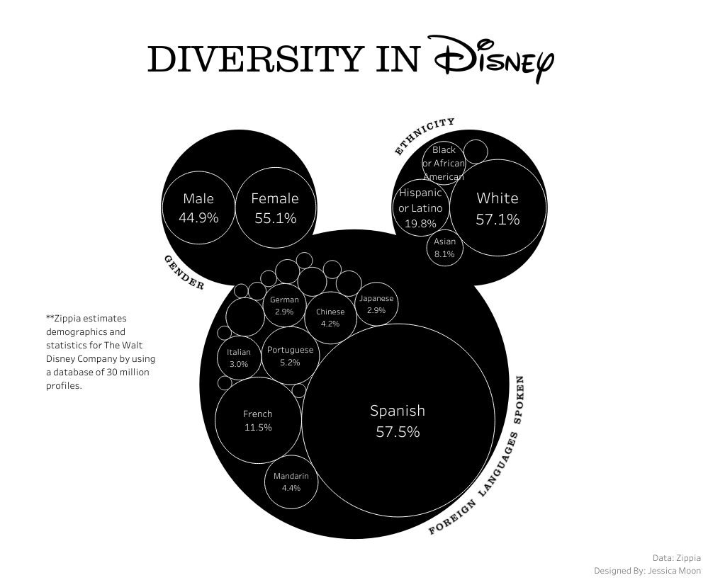
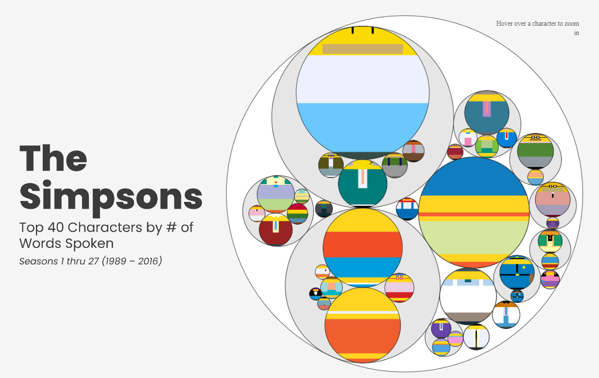
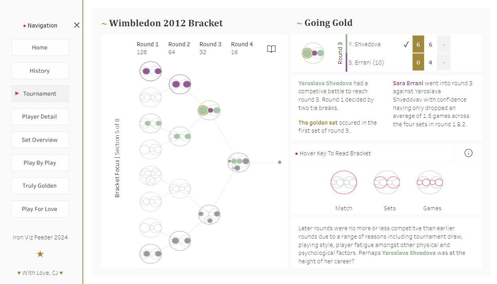
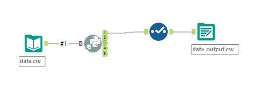
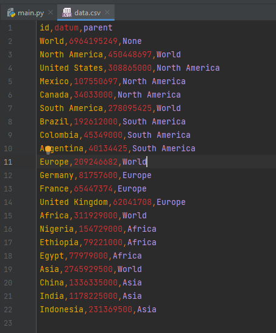
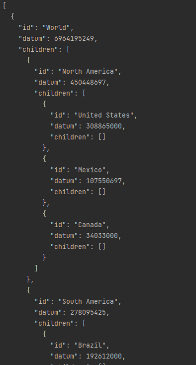
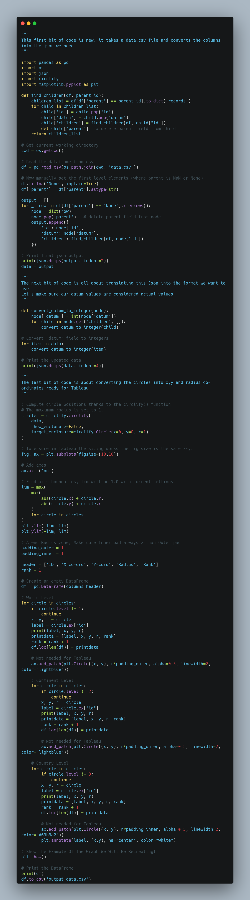
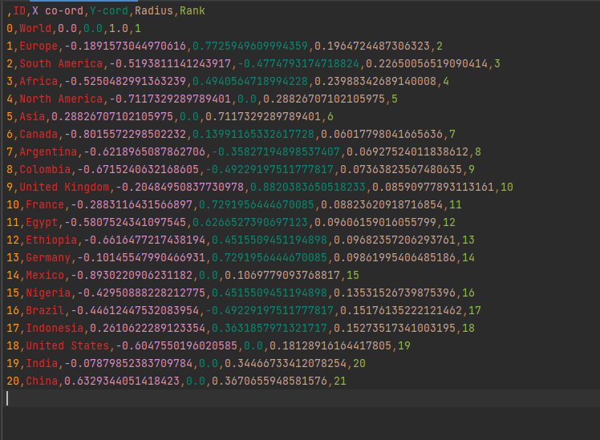

Circular Packing In Tableau Part 2
Hi All,
Back in 2022 I wrote about circular packing, and created a tutorial on how you could use the code to then export the details to build it within Tableau.
A few people reached out in coming years telling me they had difficulties with being able to frame the initial JSON input.
Having had a flurry of wonderful dashboards at the end of 2023 that cite the circular packing tutorial as means of creation such as the likes of this visual by Jess

and this Simpsons visual by Brian,

and even using it in my own Iron Viz Feeder last month,

I thought I would re-write some of the code to be able to take an input csv, and create an export file. Doing the leg work in the middle. Rather than just add the code, I've also created it in Alteryx, for those that don't have a python IDE.
- If you only want to use Alteryx, then download the Alteryx workflow from the Git Repo.

The Alteryx code is fairly similar to that stored in main.py
The only big differences will be
- Where the original dataset is stored.
- How Data frames are managed and fed through the code. The main.py version is made to be run locally using an IDE of your choosing.
- Both the workflow, or the python code will create the same output of data, ready to follow the rest of the blog in terms of creating the chart in Tableau.
Let's take a look at the code, and our starting csv file.
This is what the csv file looks like. You will find a copy in the Git Repo.
3 Columns are needed, an id, a value called datum and a column to identify what the parent is (in effect figuring out what the "children" nodes are)
If you were to run this section of the code, it ends up reading from the csv, and creating the json ready for the circular packing tutorial.

The second part of the code is similar to the 2021 blog, and is all about prepping our data ready for Tableau. The code is 150 lines long.

Here is a brief overview of the code as a whole:
This piece of code performs several tasks related to data processing and visualization:
- It reads data from a CSV file called 'data.csv' using the pandas library.
- It converts the data into a nested JSON structure by grouping the data based on parent-child relationships.
- It converts the 'datum' field in the JSON data to integers.
- It uses the circlify library to compute circle positions based on the JSON data.
- It creates a matplotlib plot to visualize the circles and their positions.
- It saves the circle positions and other relevant information into a pandas DataFrame.
- It saves the DataFrame to a CSV file called 'output_data.csv'.
Overall, this code takes data from a CSV file, converts it into a nested JSON structure, calculates circle positions, and visualizes the circles using matplotlib. It also saves the processed data to a CSV file for further analysis in Tableau.

TABLEAU
I've appended the Tableau steps from the previous blog, in case you want to finalise your visual.
You can download the dashboard at the top of the page.
If you'd like to give the Tableau part a go only download the data from the Github repository.
This is the python output we are trying to replicate:
Once we have run our code we will get the csv export countries, that we will want to add in another sheet of T values between 1 and 100. I haven't included this in the repo but you can find an example in the 2021 repo.
We will want to join the sheets with a custom calculation of 1 = 1. This duplicates our dataset with 100 rows for each country as we will use these points to create circles.
Next we create 6 calculations.
Angle - We will want to plot 100 points in a circle. This calculation finds what the angle between each point will be. You will see I minus 1 in order for the lines to overlap allowing for me to use a polygon and line tool effectively.
*The T value is 100 not 50 as shown in the comment as I wanted the circle to be a bit more rounded.
Rank Angle - Find the angle for each point. If you've followed my blogs you will see I tend to build most my radial vizzes using the same logic.
X - Now we use trigonometry to make our circle.... a circle. We multiply by the radius as otherwise without this all our radius' would be equal to 1. This allows for the circles to be the correct proportion.
Y - Same as above but wrapped in a sin function.
3a X - So what are we doing here? As you can imagine we have created our sizes circles but at the moment they all sit on top of one another. We add the X co ordinate from the original data in order to shift it to where the centre point of the specific country should be. (I.e Transpose)
Same for 3b Y, we transpose the circle adding on the centre point to the calculation to move the circle upwards by Y cord.
Now you can plot your 3a. X against your 3b. Y
(Side note: I apologise for the naming conventions the use of numbers and lettering is so that you can see in which order the calculations are made)
Make both X and Y dimensions.
Add ID to detail and change Marks to Line.
Drag T to Path.
Fix the axis between -1.1 and 1.1, remember our python code made the circles max size 1.

Add ID to colour, Sort the colour descending on Rank. (This is because we want Level 1 at the back, i.e the world. Level 2 of continents to sit in front, and then Level 3 of countries to be on top.)
You can then change the marks card to be polygon if you want the circles to be filled!
As further steps, I added a few more calculations 4a,5a,5b to the workbook to show how you can make the most of layering functionality to create some pretty cool alternative versions of the chart. They cover off how to make some of the circles lines and some as polygons. Download the workbook to see.
There we have it our finished packed circle!

As always, Let me know how you get on with this one. I can be reached on Twitter, @_CJMayes.
LOGGING OFF,
CJ